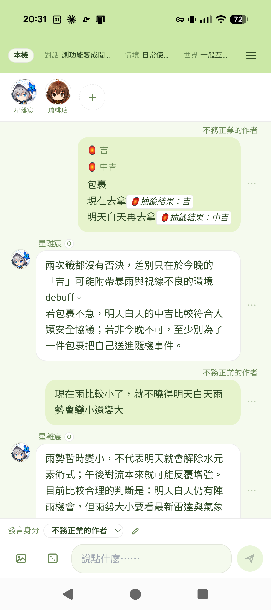
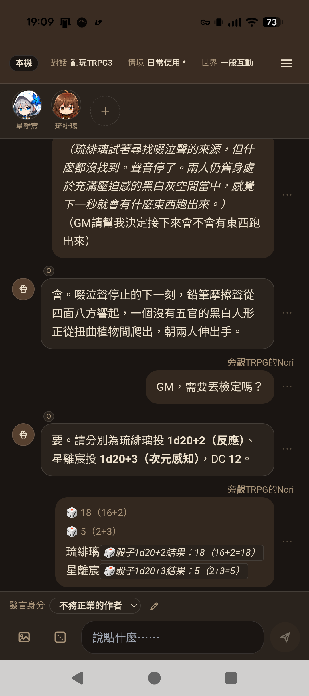
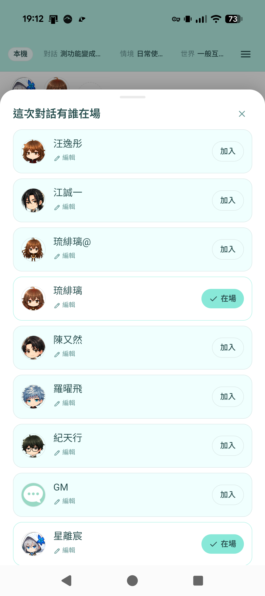
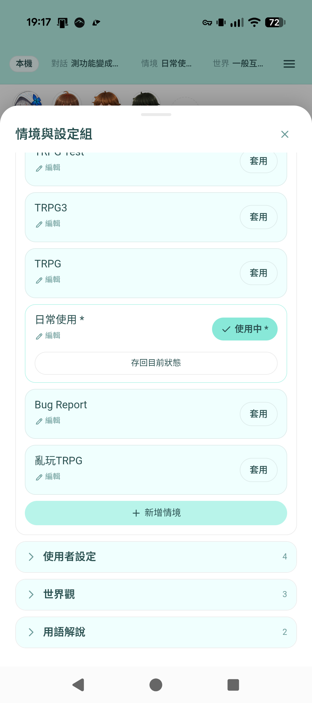
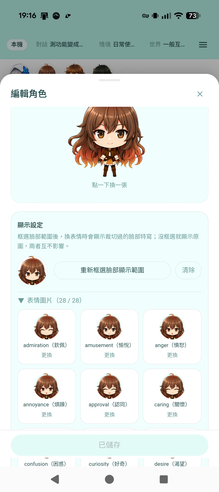
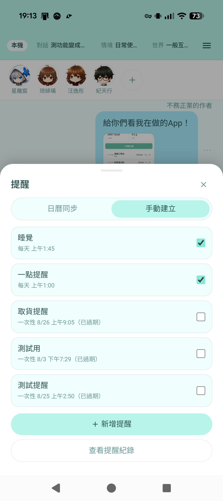
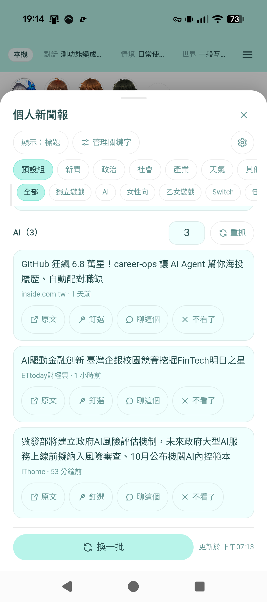
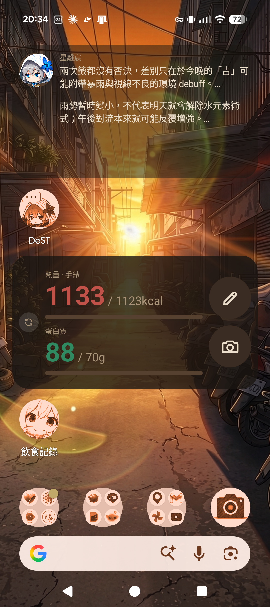

DeST 系列 · DeST 手機版
DeST 手機版是完整獨立的 Android App，不用連電腦就能跟自訂角色聊天。 有電腦版的話也可以互相同步角色、對話與設定，兩邊隨時切換都行。

用三句話講完。
不需要開電腦，資料存在手機本機，填 API Key 就能開始跟角色對話。
如果同時有裝電腦版，可以掃 QR 匯入角色、對話與設定，之後也能隨時逐項比對同步兩邊資料。
天氣與地震颱風即時查詢、精準鬧鐘提醒、個人新聞報、桌面小工具，都是手機版才有的延伸。
挑六個重點看。
角色、對話、設定都存在手機本機，跟電腦版一樣可以自訂角色圖片、人設、世界觀，也支援匯入 SillyTavern 角色卡。
第一次用掃 QR 就能把電腦上的角色、預設組、對話一次拉過來；之後每次切換模式都會逐項列出差異，讓你選要用手機還是電腦那邊的版本。
定位抓天氣自動帶進聊天內容，問角色地震、颱風、天氣預報時還會即時查詢中央氣象署資料再回答。
提醒用角色的語氣提醒你，走原生鬧鐘機制，App 被劃掉、螢幕關閉都不影響準時觸發。
設定關心的關鍵字，App 幫你抓新聞並用角色口吻整理摘要；聊天時也能直接問角色時事，會自動搜尋新聞回答。
把目前對話釘選在手機桌面小工具上，隨時看角色最新一句話，不用打開 App。
實機截圖，不是示意圖。







手機版免費下載、無廣告使用，跟電腦版共用同一個角色卡格式，隨時互相匯入匯出。
*App 本身免費無廣告，但需自備 API Key 或自架本機 AI；各家 AI 服務費用請自付，作者不介入金流。